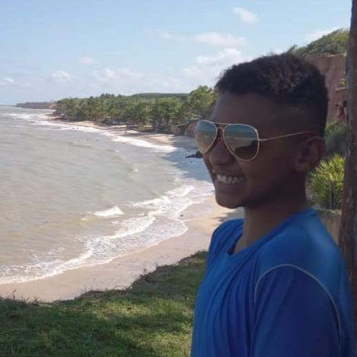

O que é este portal?
Este portal foi criado para apresentar meus principais interesses, minhas habilidades, meus objetivos e um pouco da minha história. Nele, você poderá conhecer os temas que mais me inspiram e fazem parte da minha vida, como tecnologia, informática, inteligência artificial e aprendizagem contínua.
.jpg)
Sobre Mim
Meu nome é Nathan.
Sou estudante do curso Técnico em Informática e tenho 16 anos, gosto muito de jogar jogos de estratégia, jogar futebol e passar o meu tempo junto com minha família e amigos. Moro em Passabém, que é uma cidade pequena com mais ou menos 1600 habitantes, e com a minha família, passamos os finais de semana sempre fazendo um churrasco e assistindo filmes. Sobre o futebol torço para o Cruzeiro, e além disso, fui classificado no projeto Passaporte Mineiro do Conhecimento, que basicamente é um programa que garante bolsas integrais para estudar o "Ensino Médio" em outros países.

Meus Interesses
- Futebol - Sempre joguei futebol, mas atualmente pratico somente às quartas-feiras.
- Família e amigos - Sou muito ligado a minha família e amigos, passando a maioria do meu tempo com eles, sou muito grato por tudo o que todos fazem por mim.
- Estudos - Para mim, tudo gira em torno do estudo, e é muito gratificante ver como meu esforço e minha dedicação estão mudando o meu futuro.
- Jogos - Sempre gostei muito de jogos, mais particulamente os de estratégia, que servem como um meio de desestressar e de passar o tempo.
- Filmes e séries - Assisto muitos filmes com minha família, principalmente nos finais de semana, e nosso tipo preferido se filme é ficção científica.
- Churrasco - Também nos finais de semana costumamos fazer churrasco, sendo um importante momento em família, e as vezes, convidamos amigos para participar desse momento.
Meus Objetivos
Quero aproveitar ao máximo a minha viagem, conhecendo novas culturas e pessoas. Quando eu voltar, irei focar no ENEM para alcançar uma boa faculdade. Meu principal objetivo é ser feliz.
.jpg)
Contato
📧 E-mail: nathanmamedes27@gmail.com
📷 Instagram: nathan_mamedes27